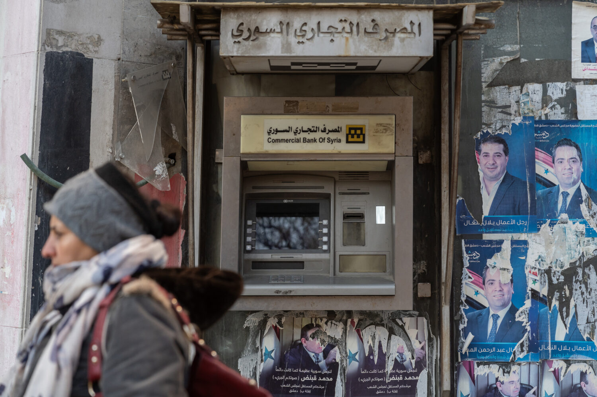
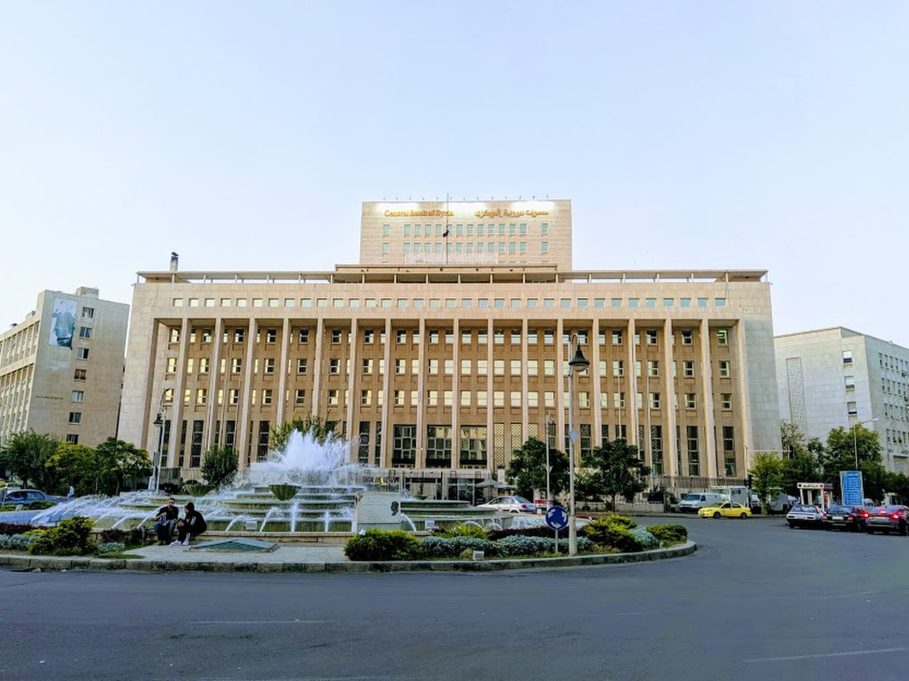
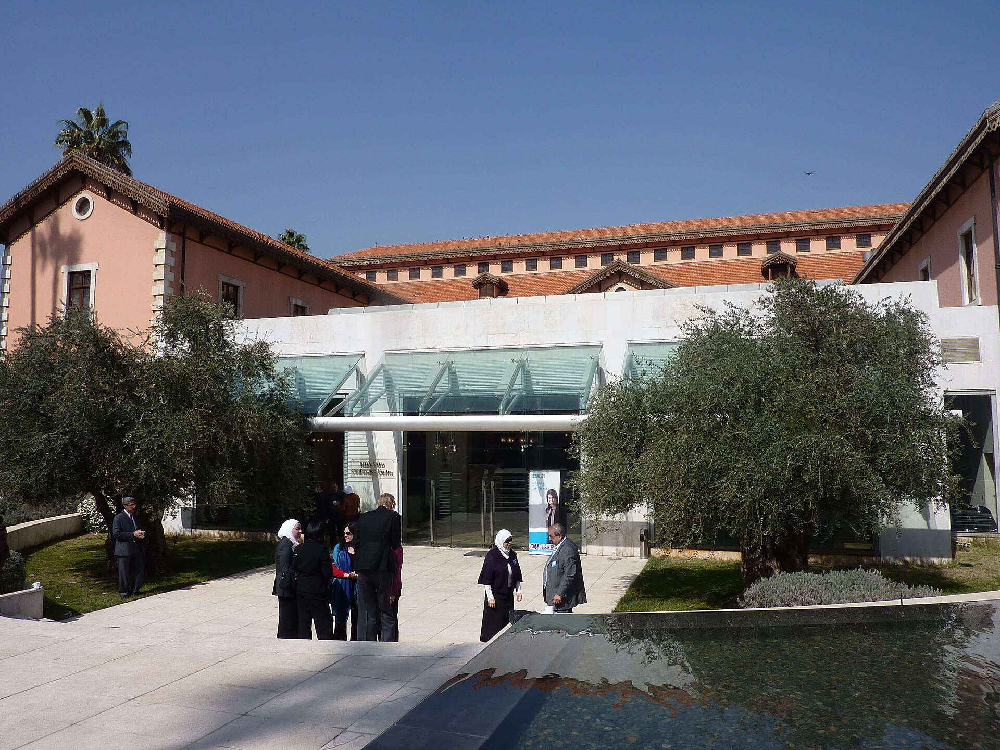

THE ECONOMY
Syria’s Reconstruction
Deal Machine

BUSINESS / TECHNOLOGY / IDEAS
THE NEW SYRIA
The deals, investors, and power brokers reshaping the country — and what their plans mean for its future.

THE ECONOMY

POWER

TECHNOLOGY

IDEAS

A magazine in development. A first look at the questions we want to explore.
THE CASE FOR DREAMLAND
Syria’s future is being negotiated in investment deals, government offices, university classrooms, and everyday decisions about work and money. Understanding that future means looking closely at who has the power to shape it. Dreamland is a magazine about business, technology, and ideas — and the country being built through them.
We want to follow the money without losing sight of the people. Who gets to rebuild, who gets access to credit, and who bears the costs of change? Our starting point is that economic decisions are public questions. They deserve clear reporting, careful scrutiny, and a readership wider than the people making them.
Technology brings its own promises: new industries, new connections, new ways to work. We want to examine those promises with curiosity and independence. That means taking entrepreneurs and researchers seriously, while asking what their ideas require, whom they serve, and what stands between an ambitious pitch and a useful institution.
And we want to make room for disagreement. Syria needs more than a single account of what is possible. Through reported stories, essays, and conversations, Dreamland will bring competing visions into focus — giving readers the context to question the present and the imagination to think beyond it.